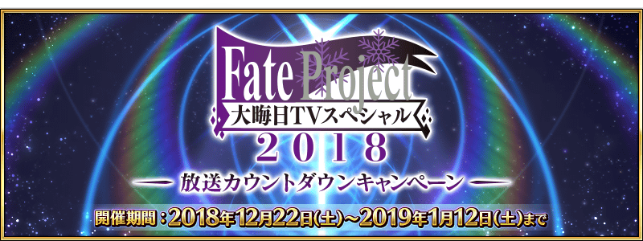
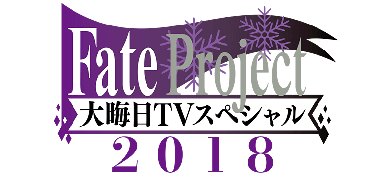

為了記念「Fate Project 除夕 TV特別 2018」的放送，舉辦「Fate Project 除夕 TV特別 2018」放送倒數宣傳活動！
◆舉辦期間◆
2018年12月22日(六) 17:00～2019年1月12日(六) 11:59

■節目詳細
節目名:Fate Project 除夕 TV特別 2018
放送時間:2018年12月31日(一) 21:00～
放送局:TOKYO MX / 群馬テレビ / とちぎテレビ / BS11 / ニコニコ生放送 / AbemaTV
為了記念「Fate Project 除夕 TV特別 2018」的放送，實施放送倒數登入獎勵。
在下述期間中，登入9次(1天算1次)的話，最多贈送黃金果實6個與白銀果實3個！
◆舉辦期間◆
2018年12月22日(六) 17:00～12月31日(一) 19:59
◆贈送對象◆
2018年12月31日(一) AM2:59前通過「特異點F 炎上汙染都市 冬木」的Master對象
| 登入次數 | 贈送內容 | |
|---|---|---|
| 第1次 | 白銀果實 1個 | |
| 第2次 | 白銀果實 1個 | |
| 第3次 | 白銀果實 1個 | |
| 第4次 | 黃金果實 1個 | |
| 第5次 | 黃金果實 1個 | |
| 第6次 | 黃金果實 1個 | |
| 第7次 | 黃金果實 1個 | |
| 第8次 | 黃金果實 1個 | |
| 第9次 | 黃金果實 1個 | |
※第1天的登入獎勵會從12月22日(六) 17:00配發。
※之後的登入獎勵會在每天AM3:00配發。
※最多能領取9次，但根據成為贈送對象的時間點，可能無法到此上限。
※上述時間前，在管理室(ターミナル)畫面的關卡橫幅必須要有「CLEAR」的文字顯示。
為了記念「Fate Project 除夕 TV特別 2018」的放送記念，實施放送當天 初次登入獎勵。
從2018年12月30日(日) 23:00到「Fate Project 除夕 TV特別 2018」放送前19:59登入的話贈送呼符1張！
◆舉辦期間◆
2018年12月30日(日) 23:00～12月31日(一) 19:59
◆贈送對象◆
2018年12月30日(日) 22:59前通過「特異點F 炎上汙染都市 冬木」的Master對象
※請注意限定登入獎勵的領取必須在12月30日(日) 22:59前通過「特異點F 炎上汙染都市 冬木」。
※上述時間前，在管理室(ターミナル)畫面的關卡橫幅必須要有「CLEAR」的文字顯示。
◆贈送內容◆
呼符 1枚
◆領取期間◆
2018年12月30日(日) 23:00～12月31日(一) 19:59的期間中，在初次進行登入的時間點，贈送到禮物箱。
※期間內未登入的話無法領取。
※禮物只能領取1次。
主線關卡第1部＆第2部的AP消耗量以期間限定變成1/4！
尚未通過至主線關卡第1部和主線關卡第2部的Master，敬請活用這機會！
◆舉辦期間◆
2018年12月22日(六) 17:00～2019年1月12日(六) 11:59
◆對象關卡◆
主線關卡第1部(從特異點F到終局特異點)
主線關卡第2部(從Lostbelt No.1到Lostbelt No.3)
※請注意第1部、第2部的自由關卡為對象外。
※在戰鬥中撤退的情況AP的消耗也是1/4或1/2。
今後，也預定在期間限定活動和期間限定宣傳活動中，會有將通過主線關卡設為開放條件的情況。
如果活用本宣傳活動推進主線關卡的攻略會有所幫助。
主線關卡第2部 第3章「Lostbelt No.3 人智統合真國 SIN 紅之月下美人」初次通過自由關卡前的AP消耗量以期間限定變成1/2！
於主線關卡第2部 第3章還殘有尚未通過自由關卡的Master，無論如何請藉此機會通過！
◆舉辦期間◆
2018年12月22日(六) 17:00～12月31日(一) 11:59
◆對象關卡◆
主線關卡第2部 第3章「Lostbelt No.3 人智統合真國 SIN 紅之月下美人」的自由關卡
※初次通過是指入手初次通過報酬的時間點前。
※在戰鬥中撤退的情況，若是關卡通過前AP的消耗也是1/2。